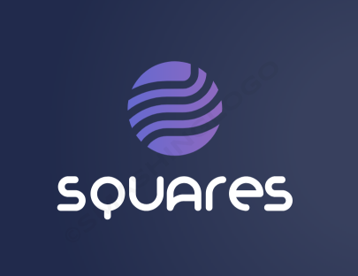

En esta web encontrarás Ayudas para jugar Minecraft, Sobre SQUARES, Oficinas, etc
Hay todo tipo de iconos solo para ti, sin copyright, hay músicas, puedes crear libros, músicas, iconos, oficinas, trabajos, logos, historias, formas de pago. (La opción formas de pagos es solo en Minecraft). |

 Descargas
Descargas